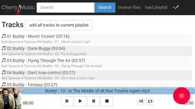
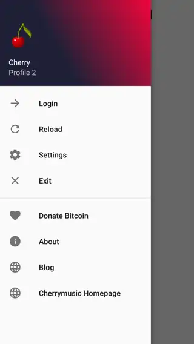

Cherry
إنترنت ومتصفحات
Wrapper for CherryMusic, a self-hosted streaming web-application. A lightweight alternative to Ampache, Google Play Music, Spotify,.. See http://www.fomori.org/cherrymusic/ for more information.
✓ ترخيص مفتوح (MIT) · آخر تحديث: 2017-12-04
1.3.11الإصدار
2.0 MBالحجم
MITالرخصة
Open in Kanzتحميل APK (2.0 MB)
Download APK
SHA-256: b27ef055d61b67f64b87f61e720edfbbaf9f56a5e340dbbc740acca453ad26de


تطبيقات تانية لنفس المطوّر (2)
More apps from this developer: de.live
امسح الكود لفتح صفحة التطبيق
Scan to open this app page
لو كنز مش متثبت عندك: نزّل متجر كنز.
Not installed? Get the Kanz store.